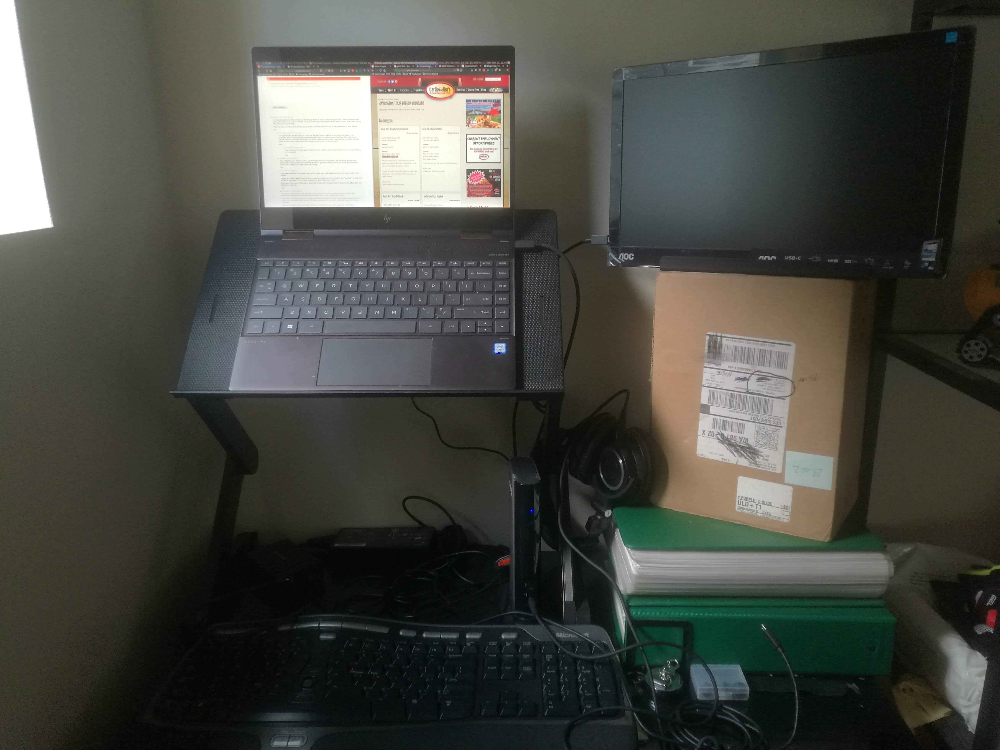

My New Dev Laptop: The HP Spectre X360
The Macbook Pro has been a staple of my time as a software developer: it was my desktop replacement and I used it at work and at home. I’ve used Macbook Pros constantly since 2008.
Last year I went on the hunt for a replacement, and landed on the HP Spectre x360. Here’s my setup, and why I chose that over alternatives.
Conclusion: My Setup #
Here’s the setup I run now:
Here’s a picture:

The Why #
The Portability of 13 Inches and 1 Pound #
I’ve owned many 15” laptops, and a 17” back in 2008. With the 17” it was just a question of how soon my back would be hunched forever, but even with the 15” the portability became a minor, but significant issue. I would often find myself in situations where space is limited, such as the bus or on a plane, and get into bizarre positions just to have enough space to type and see the screen. For my next laptop, I knew I wanted something truly portable, that would ensure a comfortable experience even in space-constrained situations.
The 13” size and weight has been great: I can easily hold my laptop with one hand, and it’s my made backpack noticeably lighter. Despite the 4k display, it’s really hard to take full advantage of that with a 13” screen, but I can get 3 columns of text windows side by side and read them without strain.
Driving 4k Displays #
Despite being a super thin, lightweight laptop, the HP Spectre can handle high resolution displays. I’ve been able to drive 3 4k displays (using the dock) at 60 frames per second. It cannot run 3D games with any reasonable performance, but it can render 2 Atom text editors and a web browser window without issue.
USB-C Charging #
Being one of the first real charging technologies that’s portable across laptop vendors, USB-C charging was a must. It has enabled me to bring a single charger for both my laptop and my phone, and even allowed for battery packs that can completely charge my HP Spectre on the road.
Linux #
OSX has been decent, but as someone who has a highly specialized UI setup in Linux, the experience didn’t compare. I want to never leave the keyboard, using tiling window managers to easily navigate editors and windows, and remove rarely used UI elements. It’s really difficult to get that setup in OSX. OSX is tightly coupled with it’s default window manager, and the best you can do is something that manipulates said windows for you like Amethyst (given the limitations, Amethyst does an amazing job. I don’t believe anyone could do much better than the experience Amethyst provided).
The most frustrating issues stem from not being able to fix problems yourself. Closed source and limited pluggability mean twiddling thumbs and asking desperately for updates. For example, High Sierra had a bug where closing a Macbook pro connected to a thunderbolt dock, then removing the thunderbolt port, caused the screen to not come back. With Linux, I could find a fix and apply it.
Price #
Apple is a premium brand, and it shows in their price. High-spec Macbooks run in the 2000+ price range. Meanwhile, a refurbished HP Spectre with a 4k display, 16GB ram, and I7 Quad Core can be had for $1000 USD.
The Cons #
I think it’s fair to note some of the places where I’ve had issues, or a less than ideal experience.
CPU in high-load situations #
When I’m attempting to run Atom in an IDE-like environment (e.g. running the Rust language server), there’s a noticeable delay compared to my desktop. It’s rarely an issue, but it does make me lean toward working on my desktop at home.
This probably will not differ from other laptops this generation, as the I7-8550u is a very popular model, and has been used in almost every high-end laptop that focuses on size.
Bonus: Thunderbolt Dock Talk #
Thunderbolt promises to be a spec that allows for a lot more interoperability between docks and laptops, since it’s effectively a glorified PCIE port. However, the reality is a lot of the functionality of the dock is powered by the laptop itself: if your graphics card cannot run the resolution, your dock will not always help you.
Some docks use a technology known as DisplayLink, which is effectively embedding the graphics card in the dock and communicating through USB. I personally have not tried this, but reviews have noted that the latency of the DisplayLink setup is noticeable.
The dock I linked above exposes two ports for attaching displays: one DisplayPort and one USB-C. I can hook up one display to each, each at a 4k resolution.
Thunderbolt docks also require approving and authenticating the dock, due to the Thunderbolt protocol allowing direct access to hardware. Any operating system you run will need to support authenticating and approving such devices. Linux distros can use the thunderbolt userspace tooling. Arch and Ubuntu provide packages to download and use them.